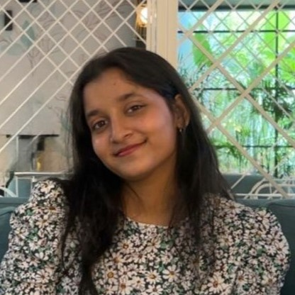

2nd Year Student at Chaitanya Bharathi Institute of Technology

Hi! I'm Mugdha, a second-year CSE student specializing in Artificial Intelligence and Machine Learning.
I'm passionate about AI and its application in various industries. I'm enthusiastic about using tech to solve real-world problems.
Feel free to connect with me!
Third Place – Metamorphosis Global Schoolpreneur Summit (2019)
Secured 3rd place among 1,500 business ideas at the Global Schoolpreneur Summit organized by Metamorphosis Edu.
Pitched our idea, "Temples Trust" – a platform designed to connect individuals with local temples, promoting engagement and preserving India’s temple heritage.
Email: mugdhachalla@outlook.com
LinkedIn: Connect with me!